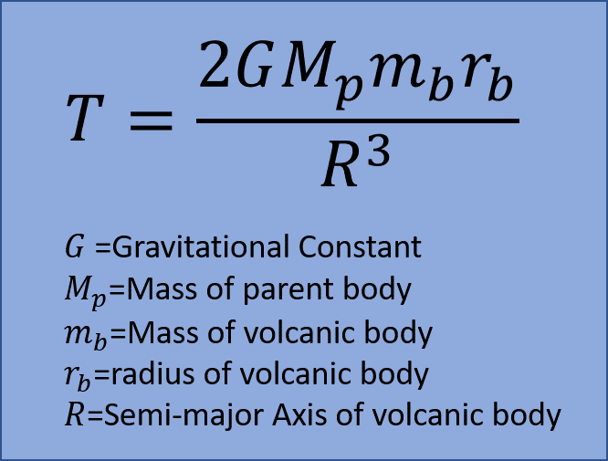
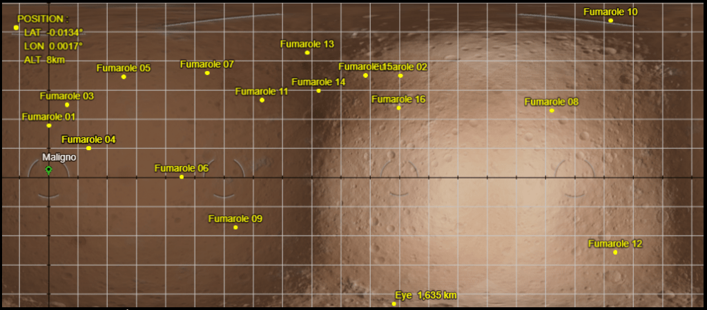

This is a follow-up study to a detailed survey of a body with Major volcanism [1,2]. The goal of that study was to investigate the number of sites in a body with Major volcanism and complement the work carried out by CMDR Varonica [3].
The body that was surveyed in the first study (HIP 20580 B 1 A) only had 7 volcanic sites, which was only half the number found by CMDR Varonica in Hyadum I 2 A (total of 14 sites). A series of discussions [4] suggested that perhaps the number of sites found on a (closely-orbiting) body is more directly related to the Tidal heating experienced by the body due to its parent, which is something dependent on both the magnitude of the Tidal Force [5] and the body’s rotational characteristics. Although Hyadum 2 A experiences a lower Tidal Force than HIP 20580 B 1 A, it has a retrograde rotational period, meaning it has more tidal heating than HIP 20680 B 1 A, which is tidally locked to its parent.
The goal of this second study was to find a body similar to Hyadum I 2 A, i.e. with high tidal force and a retrograde rotational period, and carry out a detailed survey of the number of volcanic sites. The twin world Ariminimi A 1 was selected because it is a low-radius body experiencing a high Tidal Force, an orbital period of 0.6 days, and a rotational period of -0.5 days.
It should be noted that a retrograde rotational period may not necessarily be a requisite for having a high number of volcanic sites. Perhaps the difference between the body’s rotational and orbital periods is the more relevant parameter. A body that is tidally locked has a differential of zero, whereas a counter-rotating body has a much higher differential. However, in order to replicate the Hyadum I 2 A experiment as close as possible, we picked a body with a retrograde rotational period.
To first order, the Tidal Force is given by the following equation:

The equation above was used to screen out candidates for this study. It future studies, a parameterization of Tidal Heating will be used instead, but for the time being the Tidal Force in conjunction with a negative rotational period serves as a measure of a body’s tidal stress.
The goal was to measure the number of sites on a body with Major volcanism. The survey methodology was described in detail in the first study in this series [1] and will be referenced here in its entirety.
A total of 16 Silicate Vapour Fumaroles were discovered on Ariminimi A 1. This represents a new single-body record. The distribution of the volcanic sites is shown below.

The coordinates of the volcanic sites are:
Ariminimi A 1 26.6709 // 0.1197
Ariminimi A 1 52.3587 // -179.3959
Ariminimi A 1 37.3629 // 9.4773
Ariminimi A 1 14.9682 // 20.6431
Ariminimi A 1 51.7463 // 38.5639
Ariminimi A 1 0.1767 // 68.3337
Ariminimi A 1 53.7275 // 81.7672
Ariminimi A 1 34.3994 // -101.7824
Ariminimi A 1 -25.8274 // 95.963
Ariminimi A 1 80.6957 // -71.4128
Ariminimi A 1 39.7384 // 109.5591
Ariminimi A 1 -38.6349 // -69.097
Ariminimi A 1 64.1106 // 132.7535
Ariminimi A 1 44.608 // 138.6413
Ariminimi A 1 52.4894 // 162.7192
Ariminimi A 1 35.7254 // 179.6754
There are a number of things worthy of note here.
The result above effectively replicates that of the Hyadum I 2 A experiment. The second point above might be due to chance, but a more detailed analysis of general angular distribution of sites will be needed. The third point is consistent with the results of the HIP 20580 B 1 A study which found that the majority of sites were not located in canyons.
The results of this analysis, in conjunction with that of the Hyadum I 2 A experiment, seem to indicate that Tidal Heating is the primary driver of volcanic activity found on closely-orbiting bodies such as moons, twin worlds, and moons-of-moons.
The formalism presented in the Theory section of this paper will be expanded to include a more formal treatment of Tidal Heating. A statistical analysis will be carried out to investigate the correlation between volcanism rating and Tidal Heating.
References
[1] CMDR Maligno, “Study of Number of Sites on Volcanic Body: Part 1”, https://canonn.science/codex/study-of-number-of-sites-on-volcanic-body-part-1/